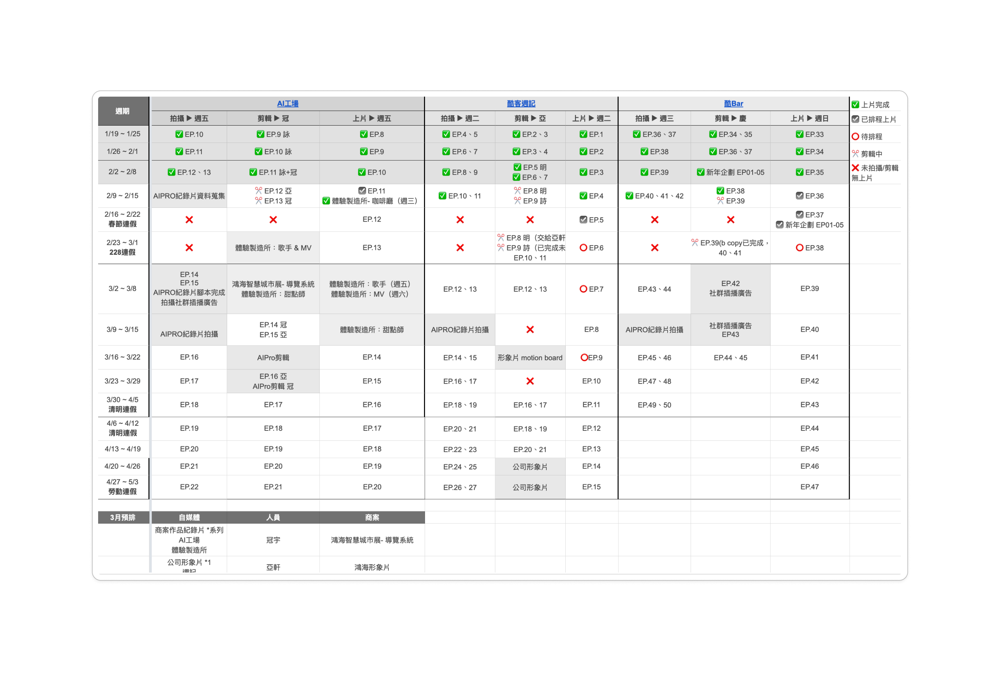
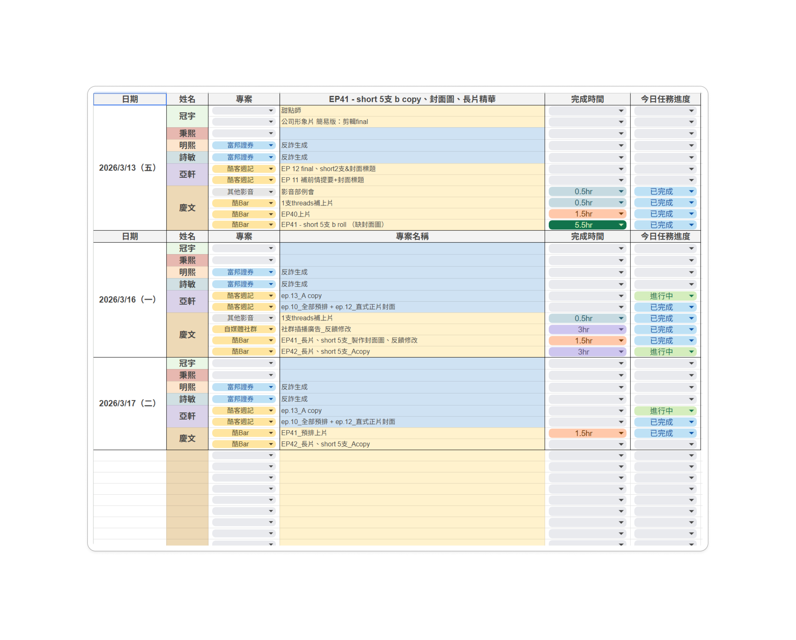
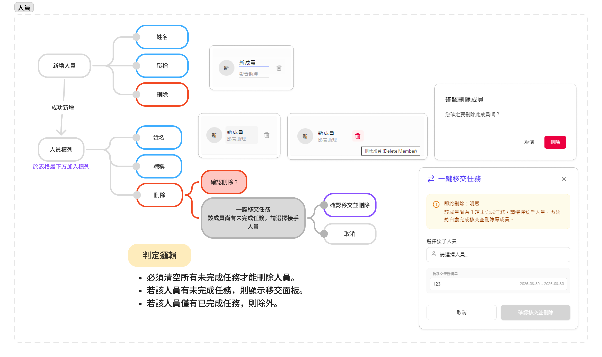
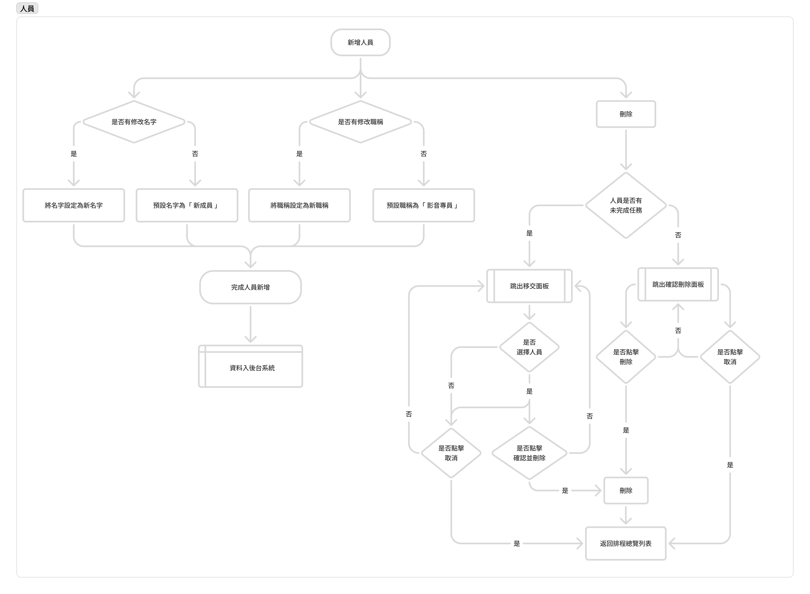
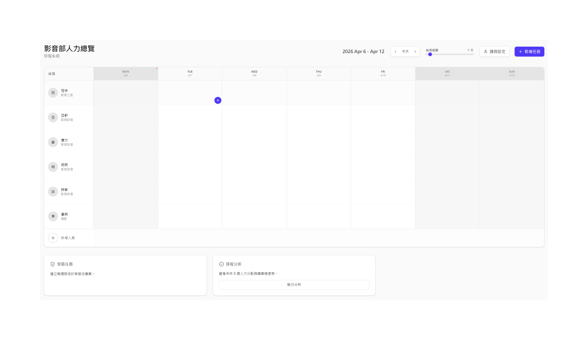
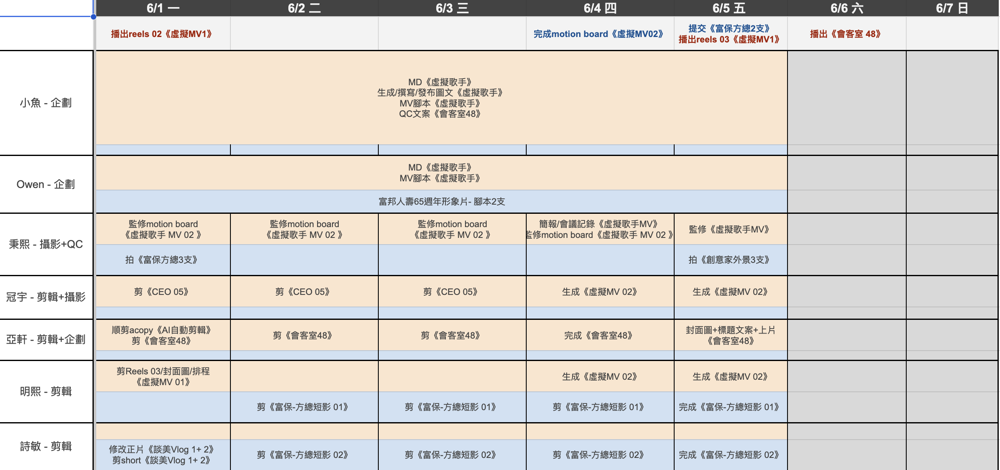

AI Smart Scheduling SystemAI 智慧排程系統
A one-stop dynamic manpower board that collapses multi-tab, hand-maintained spreadsheet scheduling into a predictive view. 將「多表對照、人工維護」的脆性試算表排程，解構收斂為「具備預判功能」的一站式動態人力看板

The Overview專案基本資訊
This project bridges two critical gaps in video production scheduling: brittle dynamic connectivity and a lack of decision foresight. By decoupling and redefining the core variables : time, talent, and project timelines. I consolidated multi-table operations into a singular, automated visual dashboard. This redesign drastically minimizes the time and cognitive overhead required for resource allocation, fundamentally optimizing capacity management for the enterprise’s highest-output department. 本專案旨在解決影音製作排程中「動態連動性差」與「決策缺乏預判」的痛點。我透過重新定義核心變因（時間、人員、專案），將原本破碎的跨表作業整合為一站式視覺看板，透過自動化重排引擎，將主管調配人力的時間成本降至最低，實質優化企業內部最高產值單位的資源配置
Context & the core problem背景與核心挑戰
Why the business cared, and what the manager was actually fighting為什麼公司在意這件事，以及主管真正在對抗什麼
Business context & opportunity商業背景與機會
As AI aggressively reshapes the marketing and creative industries, the video production department remains the company’s primary cost center and operational engine. Because its operational efficiency and project margins directly dictate the enterprise's profit ceilings, optimizing this high-volume workflow represents the single highest-ROI lever in the company's entire digital transformation strategy. 行銷與創意產業正被 AI 重塑，影音部門作為人力最多、業務量最大的單位，其「協作效率與專案毛利」直接決定了企業的利潤邊界。因此，優化此單位的排程流轉，是企業內部數位轉型中投資報酬率最高的。
What I heard in the interviews訪談中聽見的痛點
Brittle, manual architecture排程缺乏動態連動
Everything relied on hand-built Excel. With zero relational logic linking data points, a single project delay forced managers to manually recalculate dozens of coupled fields, turning conflict resolution into a multi-hour ordeal.一切高度仰賴手動 Excel 排程。由於缺乏關聯式邏輯，任何單一專案的時程異動，主管皆須手動調整數十個耦合欄位，衝突排解動輒耗費數小時。
Multi-tab fragmentation & information silos「多線對照」導致低效
To allocate resources, managers had to constantly cross-reference "daily assignment sheets" against "project timeline files", isolated spreadsheets that made macro-level, real-time capacity planning impossible.排程時需頻繁切換對照「每日分工」、「專案時程總表」等表格，無法即時且宏觀地預判全局人力餘裕。
Reactive decision-making & zero predictive insight決策缺乏預判與成本評估
Scheduling was entirely retroactive; resource clashes only surfaced after tasks were assigned. Managers had no way to simulate the cascading domino effect that ad-hoc inserting "Project A" would trigger across existing Projects B and C.衝突往往在任務指派出去後才浮現，無法在事前預見「安插 A 案」對既有「B 案、C 案」產生的骨牌效應。


Success metrics成功指標
Cut the time the manager spends scheduling, and reduce task-allocation problems (clashes, gaps, last-minute reshuffles).降低主管的排程時間，並減少工作分配問題（衝突、空檔、臨時重排）。
Discovery & Scope Management產品探索與範疇收斂
Refusing to blindly pile on features, defining a high-impact MVP by balancing technical feasibility with corporate psychology拒絕盲目堆疊功能，以「工程可行性」與「組織心理學」定義真正的 MVP
Navigating the Feature Wishlist功能發想
The initial project wishlist was massive: automated dispatch, real-time progress tracking, algorithmic talent-to-task matching, and a high-level KPI performance dashboard requested by leadership. To cut through the noise, I deconstructed the scheduling architecture into three non-negotiable core variables: time, talent, and project constraints. I then proactively initiated a three-way alignment with engineering and the CEO, leveraging these variables to drive ruthless scope management based on immediate technical realities.初始提案的願景清單涵蓋自動排程、進度追蹤、人員能力最適配演算法、以及管理階層期望的「KPI 效能監控儀表板」。我將排程功能拆解為「時間、人力、專案」三大核心變因，主動發起與工程師、CEO 的三方會議，基於現實限制進行了果斷的範疇管理。
The highest-risk feature wasn't the most technically complex, it was the KPI dashboard. I flagged that it threatened to quietly morph the platform from an empowerment utility into a surveillance tool, introducing psychological friction where staff would feel monitored and scored. This surveillance risk would inevitably breed perverse incentives, leading to gamed data or active systemic resistance. Creative video production relies heavily on subjective quality and nuance — factors a rigid metric cannot fairly capture. Once alignment was reached, our Phase 1 MVP prioritized the manager’s acute operational bottlenecks: ad-hoc rescheduling for rush inserts, centralized talent management, and streamlined project tracking.風險最高的構想是 KPI 儀表板。我指出它可能悄悄把產品從「幫助工具」變成「監控工具」：員工會覺得被監視、被評分，導致數據造假或主動抵抗。影音製作涉及創意與主觀品質，無法單純被數據量化。在取得共識後，第一階段 MVP 專注於主管最痛苦的「急單插入動態重排、一站式人員管理，與專案進度追蹤」。
Nevertheless, I envisioned a much healthier long-term evolution: utilizing performance signals to surface predictive delivery risks, such as on-time probabilities or historical rejection rates, enabling the system to algorithmically match the most resilient talent to the right task. In other words, data modeling could eventually form a valuable sub-component of a holistic KPI evaluation, but it should never be used as an absolute, automated scorecard for human creativity.即便如此，我仍看見一個更健康的未來版本：用績效訊號呈現交付風險（準時機率、退件機率），讓系統自動為任務媒合適合的人。換言之，它也許有天能提供 KPI 的一部分樣貌，但絕不該直接為人打分。
- boltAutomated conflict resolution for ad-hoc rush inserts急單插入的自動重排
- groupsTalent management人員管理
- timelineCross-project progress monitoring專案進度管理
- query_statsKPI scoring / dashboard — risk of becoming surveillanceKPI 評分 / 儀表板
- smart_toyAlgorithmic talent matching — R&D cost too high for v1能力自動適配
Agile execution & getting it built敏捷執行與技術落地
Leveraging Google AI Studio for rapid prototyping, while tracing every edge case engineering would actually have to handleGoogle AI Studio實施快速原型，並梳理工程真正得處理的邊界邏輯
Rapid Prototype Validation敏捷原型驗證
To deconstruct and validate the architecture before burning engineering cycles, I abstracted the system into 6 core interactive modules. Leveraging Google AI Studio, I rapidly spun up a high-fidelity dynamic prototype backed by fully operational front-end and back-end logic. I then conducted think-aloud usability testing with the video production manager, successfully refining information architecture within a tight two-week sprint.為了在投入研發資源前驗證架構，我將系統歸納為6大交互模組。我利用 Google AI Studio 快速生成具備前後端邏輯的高保真動態原型，直接邀請影音主管進行「放聲思考測試」，在2週內完成了介面資訊架構的可用性修正。
Edge cases & Architectural Logic Trees邊界條件梳理與邏輯樹
To ensure absolute engineering feasibility and bulletproof implementation, I meticulously mapped out extreme operational edge cases. An example is fail-safe deletion barrier for team allocation: the moment a manager initiates a member removal, the system automatically runs a conditional validation check. If the active work parameter evaluates above zero, the deletion sequence is physically intercepted and blocked, instantly triggering the contextual "One-Click Handoff" transition panel. I delivered these comprehensive state-machine and decision diagrams to development, entirely closing out dead ends before code was written.為了確保工程 100% 落地，我深入推導系統運行的極端情境。以「成員刪除防呆判定」為例：當主管欲移除某位團隊成員時，系統必須自動判定其「未完成任務數」。若大於零，系統將強制物理阻斷刪除操作，並即時彈出「一鍵移交任務」面板。我為此繪製了縝密的系統邏輯判定圖交付研發團隊，消滅所有操作死路。
Try it. The popup below is the anti-mistake design for that edge case — built straight from the Figma below. Click the delete icon.動手試試。下方彈窗就是這個邊界情境的防呆設計，點擊刪除圖示。
This member still has an unfinished task — deleting them triggers the handoff guard rather than losing the work.
About to remove Ming-hsi. This member still has 1 unfinished task. Choose a successor and the system will hand it over, then remove them.即將刪除 明熙。該成員尚有 1 項未完成任務。請選擇接手人員，系統將自動移交並刪除原成員。
- 亞軒 · Ya-hsuan
- 慶文 · Ching-wen
- 秉熙 · Ping-hsi


Human-centered insight人性洞察
The definitive product takeaway: in enterprise automation, strategic positioning is the product. The exact same systemic capability, when framed as an automated "evaluator", triggers organizational gridlock and collective resistance; yet when framed as an administrative "load reducer", it secures frictionless adoption and team trust.對於企業內部 AI 效率工具而言，「定位本身就是產品」。同一個功能，被定義為「評判」就會遭到全體抵抗；被定義為「減少負重」，就會獲得全面接納。
Deliverables & learnings專案產出與反思
What I delivered最終交付物
A comprehensive suite of system-logic engineering schematics coupled with a high-fidelity interactive prototype, delivered ready for production engineering. The board utilizes a zero-state dashboard architecture that dynamically populates and self-corrects as active projects are initialized.一套清晰的系統邏輯工程圖，加上一個高保真互動原型，交付給工程團隊的看板一開始是全空的，隨著專案被加入而逐漸填滿。

Day one: a calm, legible empty board.第一天：一張從容、易讀的空白看板。
With projects: one glance shows capacity and load.有專案後：一眼看盡人力與負載。
Impact & and status成果與現況
While the system undergoes active engineering development, the design architecture has already achieved a profound mental-model paradigm shift prior to formal deployment. Following the initial prototype evaluation, the production manager voluntarily rebuilt entire operational Excel framework around the exact information architecture I introduced. When a user goes out of their way to manually replicate your structural logic to optimize their legacy tools, it delivers the ultimate pre-launch validation: the product model has already captured the user's psychological defaults.系統目前正處於研發階段，但在尚未正式上線前，設計已實質啟發了用戶的「心智模型轉變」。參與測試的影音主管在看過我重構的一站式視覺看板後，參考我的 UI 資訊架構，重構了原本混亂的 Excel 表。當使用者開始主動依據你的設計架構來優化他們的既有工具時，這個產品模型在「心智層面」就已經成功一半。

Next steps & reflection未來展望與個人反思
If time and resources permit, my long-term evolutionary roadmap shifts the platform's core value proposition: elevating it from an operational workflow utility into the enterprise’s predictive, profit-driven decision engine.
若未來資源與時間充裕，我為此系統規劃的下一階段演進藍圖，將從「流程優化工具」升級為企業的「利潤決策助理」:
Develop a dynamic talent profile matrix—incorporating creative style tags, historical client rejection rates, and milestone compliance vectors — to power an algorithmic talent-to-task matching engine. By automatically synthesizing past performance telemetry, the system will programmatically surface the highest-efficiency capacity combinations for leadership.建立更細緻的後台人員動態資料庫（如：風格標籤、過往退件率、歷史準時率等變因）。透過演算法進行「能力—任務」的最適配推薦，由系統自動抓取人員績效數值，輔助主管判定最高效的排程組合。
Embed contract values and gross-margin variables directly into the system's underlying data model. When an ad-hoc rush job is injected, the engine won't just flag a timeline collision — it will instantly execute a predictive trade-off simulation: "Inserting Project A delays Project B by 48 hours, but increases cross-project gross yield by 15%." This equips managers with quantified business intelligence to maximize margin efficiency with every scheduling permutation.將「專案金額與毛利預估」納入系統底層模型。當急單強制安插時，系統將不只跳出時間防呆，更能即時幫主管計算出：「安插 A 案雖然會導致 B 案延誤兩天，但整體跨專案總利潤能提升 15%」 的量化商業數據，實現決策利潤的極大化。
Transitioning the system from passive visibility and task assignment to predictive cost modeling and margin maximization — unlocking the true operational ceiling of the enterprise.從「看見進度與分工」走向「計算成本、極大化利潤」。